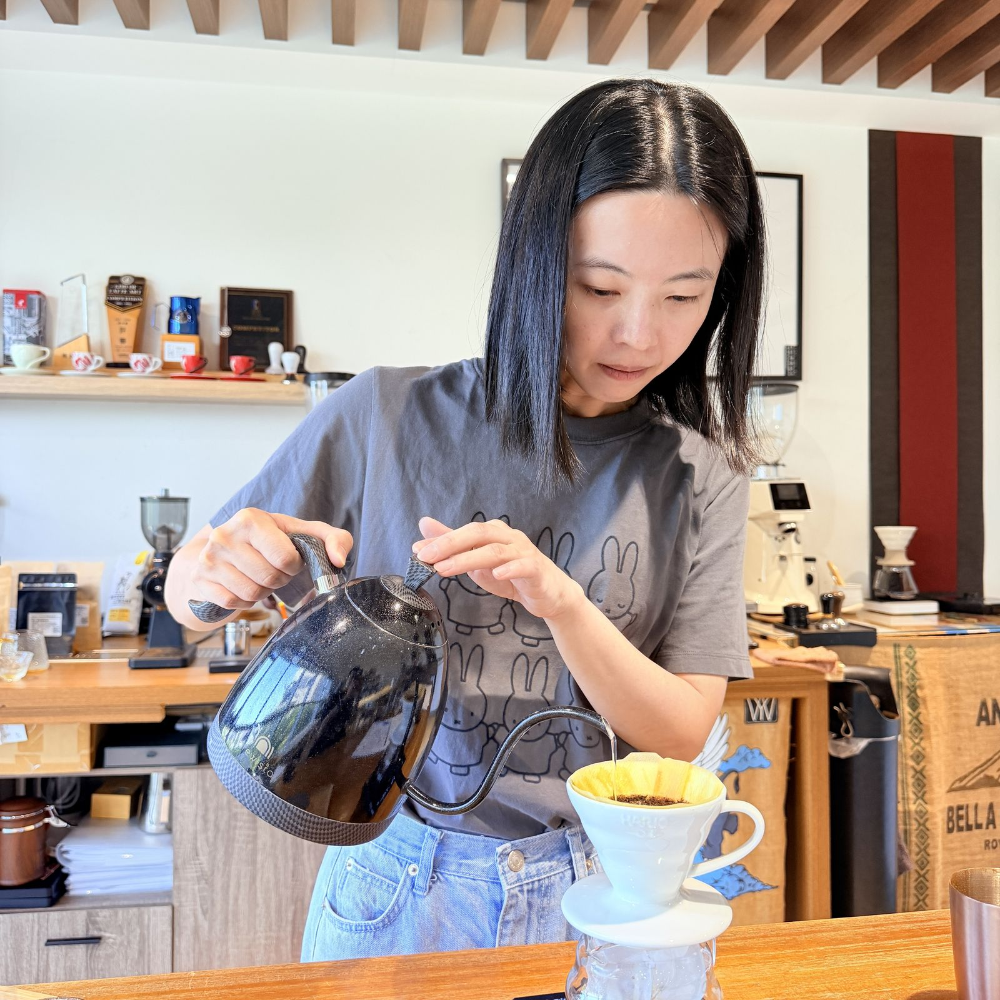
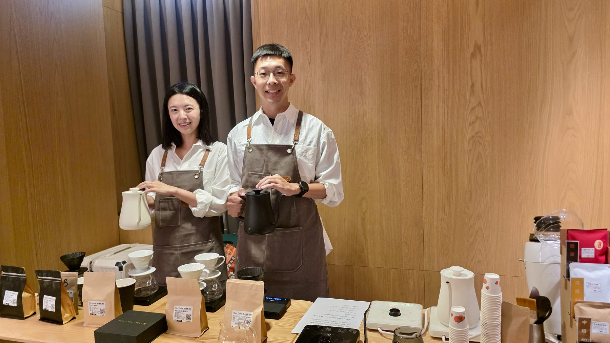
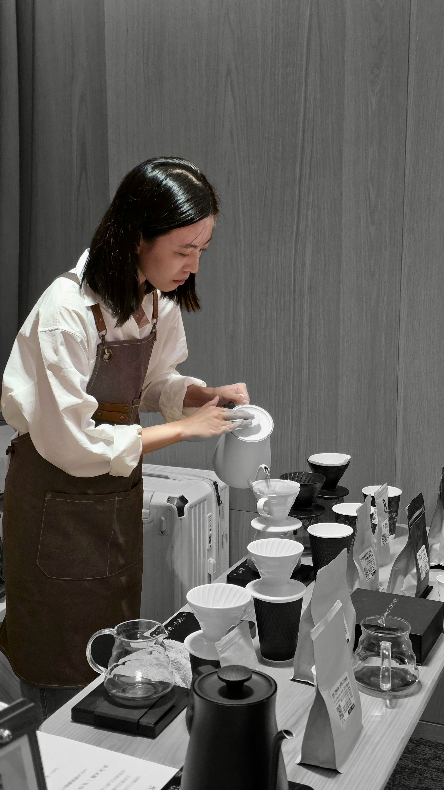
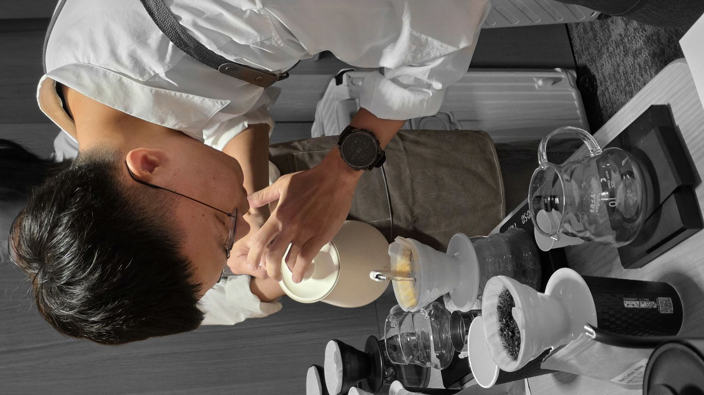

七個關鍵參數
粉水比、研磨度、水溫、時間、注水、攪拌、濾材——學會怎麼調，而不是只記一組數字。
- 粉水比
- 研磨度
- 水溫
- 時間
- 注水
- 攪拌
- 濾材

新北市林口區 · CSCA 認證講師 · 小班制
一天六小時，大量手沖實作與風味調整。先喝一杯再講理論——我們教你怎麼釣魚，而不是背公式。
關於阿勳 & 露露
我們是阿勳 & 露露，一對一起學咖啡的夫妻。
我們相信，咖啡和許多專業一樣：掌握重要的基礎，才能真正發展自己的風格。
甜度不夠，知道該從哪裡調整；酸質不夠鮮明，知道問題可能在哪裡。當你理解沖煮的基本原理，就不必只是照著公式，而能開始做出自己的選擇。
這堂課想給你的，不是一套固定配方，而是一套可以判斷、溝通、調整的咖啡專業基礎。
先學會共同的語言，再找到屬於自己的風格。
為什麼上這堂課
如果你對咖啡有興趣，想學系統性的邏輯——這堂課就是為你設計的。從判斷一杯咖啡的好壞，到一步步校正參數，讓每日手沖成為健康且有成就感的習慣。
課程核心
以沖煮科學打底，掌握七個關鍵參數；課堂重手沖實作與風味調整，先喝再講，真正做得出來。

粉水比、研磨度、水溫、時間、注水、攪拌、濾材——學會怎麼調，而不是只記一組數字。
萃取、溶解、風味平衡的常識打底，讓每次調整都有依據。
用科學步驟找出問題、修正參數，建立自己的決策流程。
每日挑戰參數，沖出符合自己風格的好咖啡。
帶著專業知識喝咖啡，讓每一杯成為照顧自己的儀式。
我們教你怎麼釣魚，而不是背公式。學完後，你可以自己慢慢每日精進——享受變強的感覺，是我們想交給你的。
小班制教學
一班最多四人；一個人也可以開班。兩位講師皆具 CSCA 台灣咖啡協會證照，並有辦活動與教學經驗。
CSCA 台灣咖啡協會證照
帶你建立清晰的沖煮邏輯，把「好像不錯」變成說得出原因、調得回風味。
CSCA 台灣咖啡協會證照
用系統方法陪你從基礎走到能自己精進，讓每日手沖變成有趣的挑戰。
上課現場
秤、壺、濾杯與豆子就在眼前——小班制讓每位學員都能被看見。


說清楚問題出在哪裡，而不只是「好像不錯」。
用系統方法調整參數，讓每一杯更接近你要的味道。
帶著專業知識選擇與沖煮。
每日挑戰參數，享受變強的感覺。
學員聲音
「以前只會照著網路上的參數煮，這堂課讓我懂為什麼要這樣調。回家後每天都想挑戰不同豆子。」
「小班制真的差很多，老師看得到我每一手注水。六小時很扎實，完全不會無聊。」
「完全零基礎也能跟上。學完後終於能說出這杯哪裡酸、哪裡薄，而不是只會「好喝」。」
「「教你釣魚」這句不是行銷話。他們給的是思考架構，之後自己精進超有方向。」
「一人開班彈性很高。我排不出團課時間，最後一對一也很划算。」
「CSCA 證照老師教得很有系統，科學感很強，但又不會艱澀。」
「最喜歡校正那段：有問題就用參數一步步拆。感覺自己變強了。」
「我很吃這套可驗證的方法。煮壞了不再靠感覺賭一把。」
「對風味描述變敏感，也更能判斷豆子適不適合自己喜歡的走向。」
「林口教室環境舒服，器材齊全。上完當天晚上就想再煮一次。」
「節奏照顧得到每位學員。問很多問題老師都耐心回答。」
「以為自己會了，上完才發現參數之間的連動以前都忽略。」
「同事都說我煮的變好喝。其實只是終於知道該改哪個旋鈕。」
「價格不低但內容紮實。比起亂買器材，先上這堂比較值。」
「喜歡他們強調風格與個性。不是要你煮成標準答案。」
「就算不開店，這套判斷力也很有用。打底打得很穩。」
「視覺與節奏都很專業。整堂課像把模糊直覺變成清楚流程。」
「年紀大也不怕，老師會拆步驟。回家每天一杯變成儀式。」
「四個人剛好，討論很多。學完還會互相分享校正筆記。」
「手沖跟義式邏輯不同，這堂幫我重建萃取觀念，超有收穫。」
課程資訊
課程開心上架折扣：原價 NT$9,800，現在一個人只要 NT$6,800，仍是兩位證照老師一起指導，超級划算。課堂有大量手沖實作與風味調整——先喝一杯，再來講理論。
想確認開課時間、適合程度，或一個人想開班——歡迎透過 LINE 好友與我們討論。
點擊加入 LINE 好友，與我們討論開課事宜。